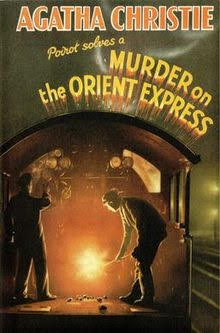

Mystery Books
The best books and reviews



Probationary Constable Peter Grant dreams of being a detective in London’s Metropolitan Police. Too bad his superior plans to assign him to the Case Progression Unit, where the biggest threat he’ll face is a paper cut.
But Peter’s prospects change in the aftermath of a puzzling murder, when he gains exclusive information from an eyewitness who happens to be a ghost.
Peter’s ability to speak with the lingering dead brings him to the attention of Detective Chief Inspector Thomas Nightingale, who investigates crimes involving magic and other manifestations of the uncanny.
Now, as a wave of brutal and bizarre murders engulfs the city, Peter is plunged into a world where gods and goddesses mingle with mortals and a long-dead evil is making a comeback on a rising tide of magic.
You have to read this book, whether you like good writing, good fantasy or urban fantasy, good characters, or simply a breath-taking story set in a breath-taking world, this book is for you.
Because it is all of those things, and much much more. Aaronovitch has written a book that will surely become a favourite on many shelves the moment they’ve finished it at 3 in the morning.
Buy now on Amazon
Just after midnight, a snowdrift stops the Orient Express in its tracks. The luxurious train is surprisingly full for the time of the year, but by the morning it is one passenger fewer.
An American tycoon lies dead in his compartment, stabbed a dozen times, his door locked from the inside.
Isolated and with a killer in their midst, detective Hercule Poirot must identify the murderer – in case he or she decides to strike again.
"The impossible could not have happened, therefore the impossible must be possible in spite of appearances."
Agatha Christie, Murder on the Orient Express
Murder on the Orient Express is undoubtedly one of Agatha Christie's greatest mystery novels.
Buy now on Amazon
On November 15, 1959, in the small town of Holcomb, Kansas, four members of the Clutter family were savagely murdered by blasts from a shotgun held a few inches from their faces.
There was no apparent motive for the crime, and there were almost no clues.
As Truman Capote reconstructs the murder and the investigation that led to the capture, trial, and execution of the killers, he generates both mesmerizing suspense and astonishing empathy.
At the center of his study are the amoral young killers Perry Smith and Dick Hickcock, who, vividly drawn by Capote, are shown to be reprehensible yet entirely and frighteningly human.
In Cold Blood is a seminal work of modern prose, a remarkable synthesis of journalistic skill and powerfully evocative narrative.
Buy now on Amazon
Rachel catches the same commuter train every morning. She knows it will wait at the same signal each time, overlooking a row of back gardens.
She’s even started to feel like she knows the people who live in one of the houses. “Jess and Jason,” she calls them. Their life—as she sees it—is perfect.
If only Rachel could be that happy. And then she sees something shocking. It’s only a minute until the train moves on, but it’s enough.
Now everything’s changed. Now Rachel has a chance to become a part of the lives she’s only watched from afar.
Now they’ll see; she’s much more than just the girl on the train...
"The Girl on the Train" has more fun with unreliable narration than any chiller since “Gone Girl,” the book still entrenched on best-seller lists two and a half years after publication because nothing better has come along.
“The Girl on the Train” has “Gone Girl”-type fun with unreliable spouses, too. Its author, Paula Hawkins, isn’t as clever or swift as Gillian Flynn, the author of “Gone Girl,” but she’s no slouch when it comes to trickery or malice.
So “The Girl on the Train” is liable to draw a large, bedazzled readership too.
Buy now on Amazon